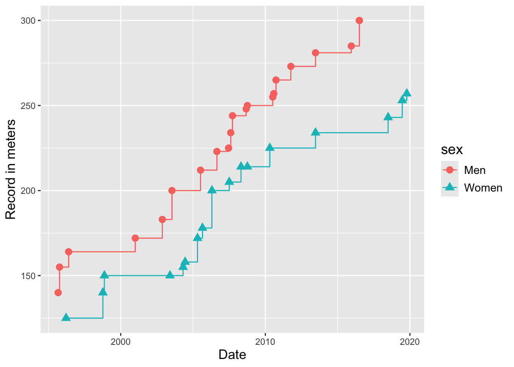

MA22019 - Data Visualization (Part 1)
Motivation
Data exploration requires generating and analyzing plots of the data.
This raises the questions:
What are the general guidelines for data visualization?
How can we create effective plots in R?
How do we decide which plot to produce?
Poor graphics will prevent us from clearly communicating our findings.
Important
We are not aiming to impress others with beautiful pictures:
A framework for data graphics
The four elements of a plot
We will describe and produce data graphics in terms of four elements:
Visual cues
Coordinate system
Scales
Context
Today we focus on visual cues.
Visual cues
We consider nine distinct visual cues
Position (quantity)
Length (quantity)
Angle (quantity)
Direction (quantity)
Shape (category)
Area and Volume (quantity)
Shade and Colour (quantity or category)
Example
Which visual cues are used in the following plot?

Which conclusions can we draw?
Creating plots in ggplot2
Data
Daily weather data for five Australian cities:
The plots we consider
We will today consider the following plots and produce them using ggplot2:
Scatter plot
Line plot
Histogram and density plot
Box plot and violin plot
Which of these have you heard of?
Density Plot
Given data \(x_1,\ldots,x_n\) for a random variable \(X\), we estimate the probability density function of \(X\) as [ (x) = _{i=1}^{n} K(), ]
\(K\) is called the kernel and it is a probability density function
\(h\) is the bandwidth
Importance of bandwidth

A too small \(h\) leads to undersmoothing (left)
A too large \(h\) leads to oversmoothing (right)
Histogram vs Density plot

Which plot should I choose?
While the following guidance may not always give the best choice, it often works fine in practice:
Scatter plots: Useful to compare the relation between two variables.
Line plots: Useful to explore how a variable evolves over time.
Histogram/Density plots: Good for exploring the distribution of a variable.
Box plots/Violin plots: Good to compare the distributions of multiple variables.
Exercises
Decide which plot(s) to use in the following situations:
Association between amount of exercise and sleep.
Distribution of annual maximum temperature for Bath.
Impact of insulation on energy consumption.
Is length or position better in terms of our ability to perceive differences in magnitude?
Summary
Data graphics can be described in terms of visual cues
Visual cues differ in how easy it is to perceive differences in magnitude
We should not rely too much on colour as a visual cue
Various types of plots can be produced in ggplot2
What next?
On Friday we apply these techniques to another data set.
The remaining visual cues are covered next week.